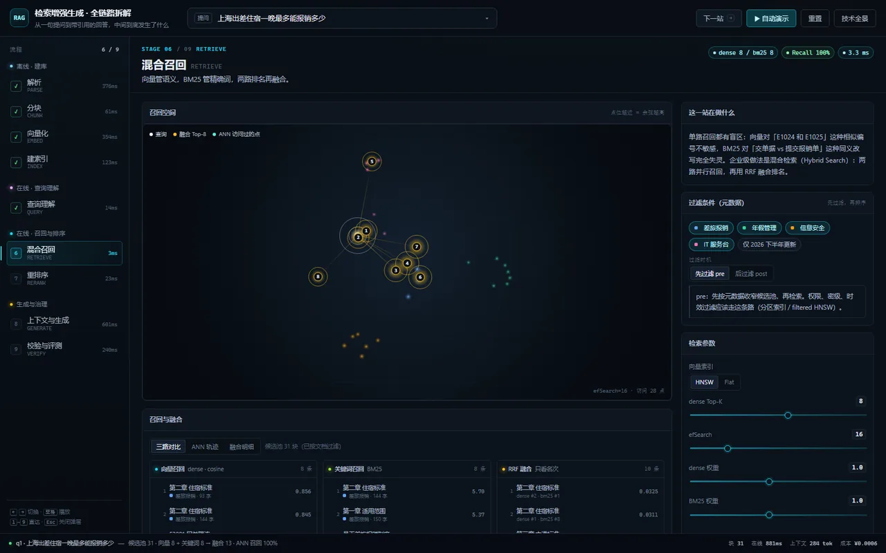
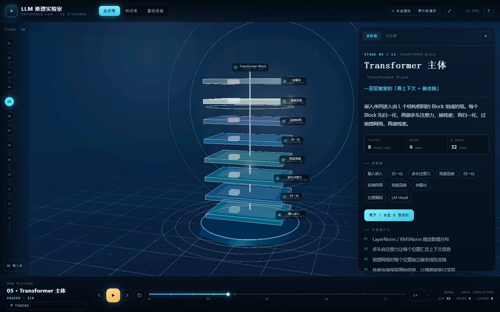
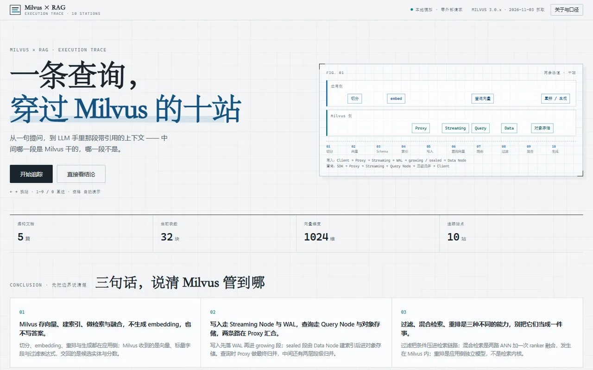
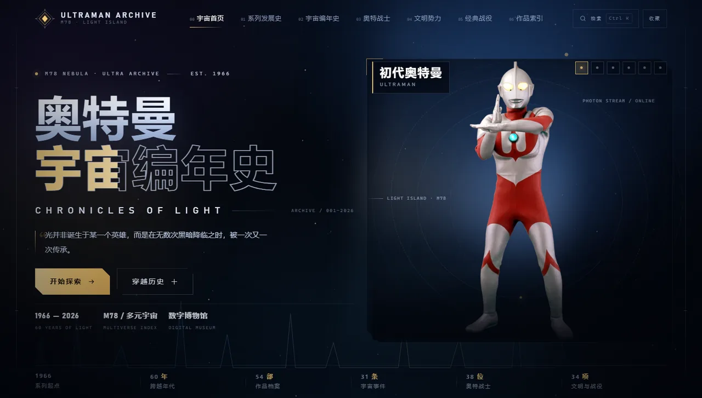
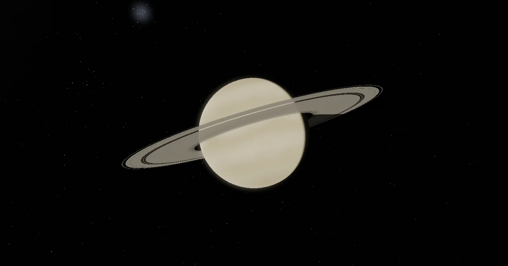
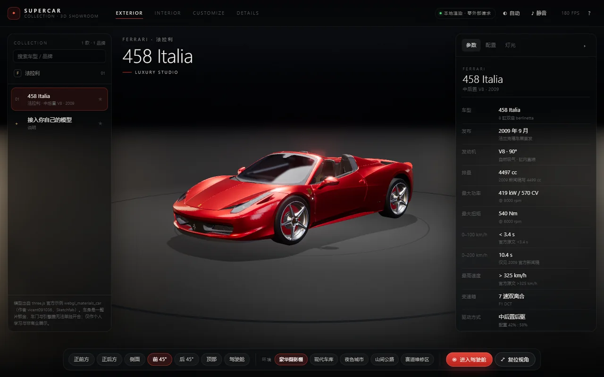

Natural-language wish lab · est. 2026
把一句话，
许成能打开的世界。
这里是「许愿」式编程实验场。每个目录都是一次许愿：一句自然语言需求，一份能跑能看的成品，加上完整源码与验收记录。成品全部离线可用，双击即开。
- 成品
- 04
- 外部请求
- 0
- 离线可用
- 100%
许愿清单
按用途分两类：拿来学的，和拿来玩的。
把系统拆开看清楚
检索、推理、向量库 —— 每一页的数字都是页面里真算的。

RAG 全链路 · 交互式拆解
从解析到引用校验共 9 站。分块、BM25、HNSW、RRF 与重排全是页面里真算的，参数一拖，数字和排名跟着变。
打开成品
LLM 推理实验室
13 站从 Prompt 走到 token 返回：分词、嵌入、注意力、logits、采样与自回归都是可点开的 3D 模块；注意力权重和采样在本地真算，不调用任何 API。
打开成品
Milvus × RAG 执行链路
从一句提问到 LLM 手里的带引用上下文：写入五站、查询五站，每站都能改参数。HNSW/IVF、BM25、三级归并、pre/post 过滤与融合都是页面里真算的。
打开成品幻想世界与奇观
不为了解决问题，只为了造一个能走进去的世界。

奥特曼宇宙编年史
以「数字博物馆」的口气重述奥特曼宇宙：54 部作品、38 位战士、31 条宇宙事件，还把缺失的角色视觉用原创 SVG 补上。
打开成品
太阳系观测台
太阳与八大行星都能点开：点谁，镜头就飞到谁面前，滚轮继续推近，表面细节真的多算几层。行星按 JPL 轨道根数运行，背景是真实星表、银河与仙女座。
打开成品
SUPERCAR 3D 展厅
一辆法拉利 458 的实时展厅：7 个预设视角、5 套不用 HDRI 的程序化环境、12 色车漆配 5 档漆面，卡钳与内饰能单独改色，7 种灯组和第一人称驾驶舱都能开。three.js、Draco 与模型全部内联，3.25 MB 双击即开。
打开成品一个许愿怎么落地
能交付、能追溯、能重建。
- 01 许愿 新建目录，写一份提示词，讲清目标、结构、视觉与验收标准。
- 02 兑现 从空壳跑通，再逐块填内容；源码、素材、脚本都留在目录里。
- 03 验收 跑构建与回归测试，记录错误日志、宽度与截图作为证据。
- 04 存档 写清说明与数据口径，记进清单，然后提交。